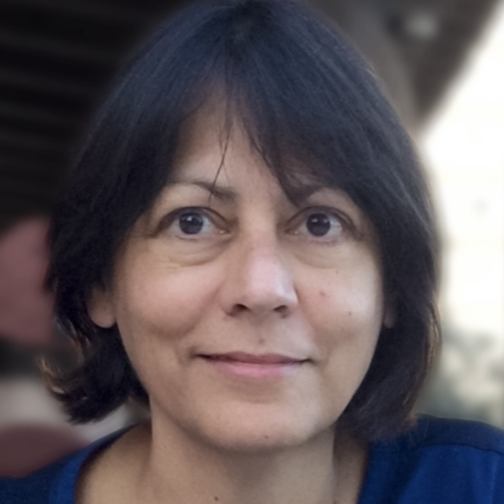
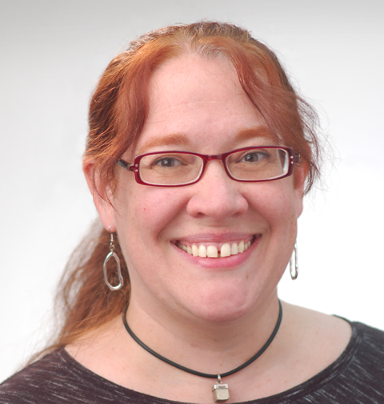

Keynotes
Augmenting vs. Assisting Humans with Pervasive Technology?
Yvonne Rogers
Professor of Interaction Design
University College London
y.rogers@ucl.ac.uk
Biography:
Yvonne Rogers is a Professor of
Interaction Design,
the director of UCLIC and a deputy head of the Computer Science department at
University College London. Her research interests are in the areas of interaction design,
human-computer
interaction and
ubiquitous computing. A central theme of her work is concerned with designing interactive
technologies
that augment
humans. A current focus of her research is on human-data interaction and human-centered AI.
Central to
her work is a
critical stance towards how visions, theories and frameworks shape the fields of HCI,
cognitive science
and Ubicomp. She
has been instrumental in promulgating new theories (e.g., external cognition), alternative
methodologies
(e.g., in the
wild studies) and far-reaching research agendas (e.g., "Being Human: HCI in 2020"). She is a
fellow of
the ACM, BCS and
the ACM CHI Academy.
Robots and Language: Grounded Language Learning from Human Interaction
Cynthia Matuszek
Assistant Professor
Interactive Robotics and Language (IRAL) Lab, UMBC
cmat@umbc.edu
http://iral.cs.umbc.edu - http://www.csee.umbc.edu/~cmat
Biography:
Cynthia Matuszek is an assistant professor of computer science and electrical engineering at
the
University
of Maryland,
Baltimore County, and the director of UMBC’s Interactive Robotics and Language lab. She
received
her Ph.D.
in computer
science and engineering from the University of Washington. Her research is focused on how
robots
can learn
grounded
language from interactions with non-specialists, which includes work in not only robotics,
but
human-robot
interactions,
natural language, machine learning, machine bias, and collaborative robot learning, informed
by
a background
in
common-sense reasoning and classical artificial intelligence. Dr. Matuszek's work has been
published in
machine
learning, artificial intelligence, robotics, and human-robot interaction venues.
Supervision Signals for Machine Learning in Healthcare and Beyond

Dr. Ismini Lourentzou
Assistant Professor
Virginia Tech
ilourentzou@vt.edu
Biography:
Dr. Ismini Lourentzou is an assistant professor of computer science at Virginia Tech. Her research interests are at the
intersection of machine learning and data science, specifically in learning with limited imperfect supervision,
self-supervision, multi-modal representation learning with applications to vision and language, and sequential decision
making. Dr. Lourentzou's research is focused on building intelligent task assistants that augment human intelligence,
and her work has been published in artificial intelligence, machine learning, and data science venues and journals. She
obtained her Ph.D. from the Computer Science Department at the University of Illinois at Urbana - Champaign. Dr.
Lourentzou was selected as a Rising Star in EECS in 2019, has received an NSF EAGER grant, a Microsoft Azure Research
Award, and an IBM Invention Plateau.